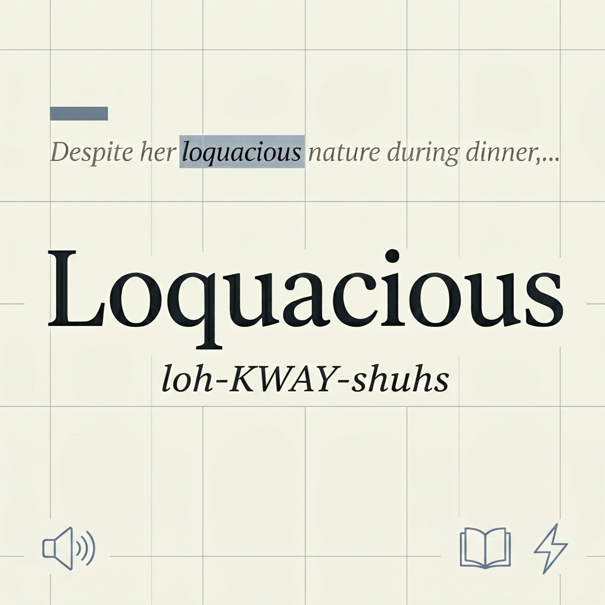

{ID:"01", DOMAIN:"EdTECH"}
— 01 | EdTECH
Context Clues
Context Clues uses a LangChain-powered AI feedback loop that evaluates user guesses and dynamically generates progressively clearer contextual sentences to guide learning. The system is built with a React frontend, FastAPI Python backend, and SQLite database to support an adaptive vocabulary training experience.
Context Clues is an AI-powered vocabulary learning web app designed for lifelong learners, helping users infer word meanings through contextual scaffolding rather than memorizing static definitions. The product focuses on improving long-term retention by training users to recognize nuance through progressively structured sentence clues.
